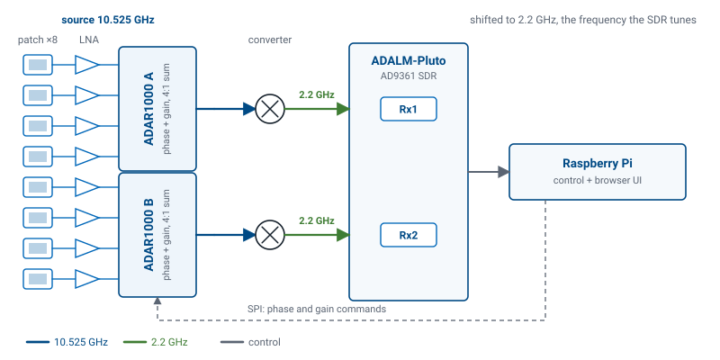
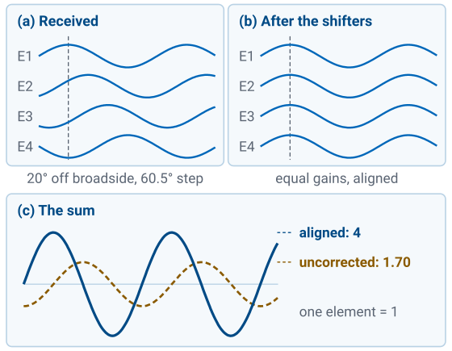
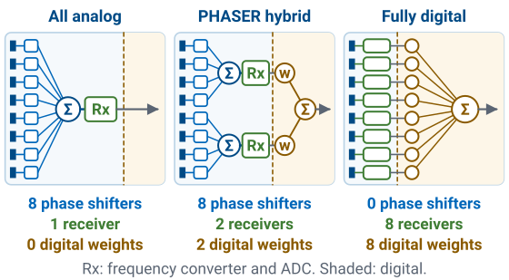
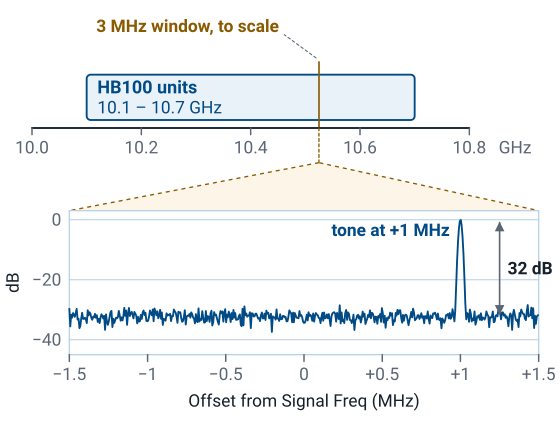
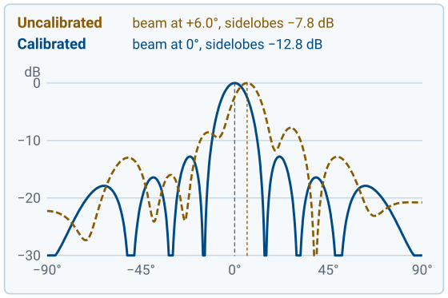
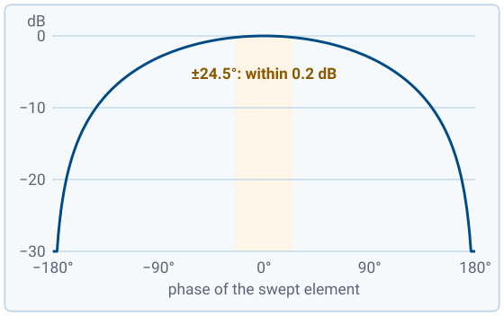

L17 - Introduction to Phased Array Hardware#
Introduction to Phased Array Hardware
The ADALM-PHASER sets the phase and gain of each of its eight elements.
Lesson 17 · Antennas, Phased Arrays, and Radar Systems · Dr. Neil Rogers
Slides
Learning Objectives
- I can identify the hardware architecture of the ADALM-PHASER and control it via SDR software.
Lesson 16 built the array factor by assuming we can hand every element its own amplitude and phase, then add the results. Every result in array theory rests on that assumption, and satisfying it takes real hardware: eight phase shifters, eight attenuators, a summing network, a frequency converter, and a computer to command all of it. This lesson takes that hardware apart: the ADALM-PHASER, the 8-element X-band array the rest of Module 3 runs on, one block at a time. The L17 Lab then brings your own kit up from a blank card, shows the \(10.525\ \text{GHz}\) source on a spectrum display, and watches the kit’s beam sweep follow the source when you move it; its packet records both, that the kit came up and that it works.
The page assumes no receiver course. It needs one idea about frequency: the SDR cannot digitize 10 GHz, so the board shifts the signal down to \(2.2\ \text{GHz}\) before anything is digitized, and the SDR only ever listens there.
The ADALM-PHASER Receive Chain

The PHASER is a receive array: eight patches capture the wave from a source in front of it.
Everything between the patches and the Raspberry Pi turns eight microwave signals into two streams of numbers.
The frames that follow take the blocks in the figure in order, from the patches to the Pi.
The Patches and the LNAs
Eight patches sit in a row \(d = 14\ \text{mm}\) apart, and their phase differences alone record the arrival angle:
An LNA behind each patch sets the noise figure, because its gain divides down the noise of every later stage.
Eight microstrip patches sit in a horizontal row on the front face of the board, spaced \(d = 14\ \text{mm}\) center to center. Each one is an antenna in its own right with its own element pattern, and the total pattern is that element pattern times the Lesson 16 array factor (pattern multiplication). A wave arriving off broadside reaches the patches in sequence, so element \(n\) differs from element 0 by the geometric phase \(\Delta\phi_n = n\ kd\sin\theta\) of Lesson 16. Preserving that phase difference is the job of everything downstream.
An ADL8107 low-noise amplifier sits directly behind every patch, ahead of any phase shifting or combining. Gain placed first sets the receiver’s noise figure, because the noise each later stage adds is divided by that gain when referred to the input. Phase shifters and power combiners are lossy, so the order here is deliberate.
The rule is the cascade noise figure. For a chain of stages with noise factors \(F_1, F_2, F_3, \ldots\) and available gains \(G_1, G_2, \ldots\), all as linear ratios rather than decibels, the noise factor of the whole chain is
Lesson 12 wrote a receiver’s own noise as an equivalent input temperature, \(T_e = T_0(F - 1)\) with \(T_0 = 290\ \text{K}\). Substituting it stage by stage gives the same rule in temperatures,
so each stage’s noise counts at the input divided by all the gain ahead of it. A passive lossy stage, such as a phase shifter or a combiner, has a noise factor equal to its loss when it sits at the reference temperature \(T_0 = 290\ \text{K}\) (\(F = L\)).
The numbers that follow are illustrative, not datasheet values: an LNA with a \(2\ \text{dB}\) noise figure (\(F_1 = 1.585\)) and \(20\ \text{dB}\) of gain (\(G_1 = 100\)), followed by a beamformer stage with \(10\ \text{dB}\) of loss and so a \(10\ \text{dB}\) noise figure (\(F_2 = 10\)). With the LNA first,
or \(T_e = 196\ \text{K}\). With the lossy stage first, \(G_1 = 0.1\) and
or \(T_e \approx 4300\ \text{K}\). The same two parts in the other order lower the signal-to-noise ratio by \(9.8\ \text{dB}\).
The ADAR1000 Beamformers
Each ADAR1000 applies a phase and a gain to four RF inputs and sums them into one output.
Its 7-bit phase shifter sets the phase in \(2.8125^\circ\) steps.
The GUI’s eight element sliders write registers in these chips.

Two ADAR1000 chips do the beamforming. Each is a 4-channel analog beamformer: it applies a programmable phase and a programmable gain to each of its four inputs at RF, then sums the four into a single output. Each chip sets the phase in steps of
the step size of a 7-bit phase shifter. We will use the gain as a taper in the L22–L23 Lab. When the GUI shows you eight element sliders, those sliders are writing registers in these two chips.
In the figure, a wave from \(20^\circ\) off broadside reaches each element \(60.5^\circ\) behind the last; after the phase shifters the four line up and sum to 4, against 1.70 uncorrected.
In degrees,
at \(10.525\ \text{GHz}\). The figure’s step is
and the uncorrected sum of four unit phasors stepped by \(\psi = 60.5^\circ\) is Lesson 16’s array factor with \(N = 4\),
against 4 once the shifters align them.
A progressive phase of one LSB steers the beam from broadside to
That does not confine the beam to a \(0.91^\circ\) grid. Each element’s phase is rounded on its own, so the rounding error varies across the ramp; its main effect is a phase error that raises the sidelobes, which Lesson 23 computes: about \(-42\ \text{dB}\) at 7 bits, far below the sweep’s 23 dB floor.
The Back End
The Pluto cannot digitize 10 GHz, so the board shifts the signal down first.
Block |
Role |
|---|---|
2 LTC5548 converters |
X-band down to 2.2 GHz |
ADALM-Pluto |
digitizes both channels |
Raspberry Pi |
SPI, |
The SDR that digitizes the array’s output, an ADALM-Pluto, tunes no higher than \(6\ \text{GHz}\), so it cannot take a \(10\ \text{GHz}\) signal directly. Each ADAR1000 output therefore goes through an LTC5548 frequency converter, which shifts it down to \(2.2\ \text{GHz}\). The board sets the size of the shift from the source’s frequency, so whatever the HB100’s exact frequency, the signal always arrives at \(2.2\ \text{GHz}\), and the SDR only ever listens there.
The ADALM-Pluto, an AD9361 transceiver, digitizes the two \(2.2\ \text{GHz}\) channels. It samples at 3 MSPS in the course GUI and produces two streams of complex samples.
Each sample is a complex number \(I + jQ\), and a complex signal can tell a tone above the center from a tone below it. The sampling theorem from your signals course says a real signal sampled at \(f_s\) covers \(0\) to \(f_s/2\); a complex signal sampled at \(f_s\) covers \(-f_s/2\) to \(+f_s/2\), a window \(f_s\) wide. At \(3\ \text{MSPS}\) that window runs from \(-1.5\) to \(+1.5\ \text{MHz}\) around \(2.2\ \text{GHz}\), and it is the window the FFT tab displays.
The Pi on the back of the board runs the Python backend.
It writes phases and gains to the ADAR1000s over SPI, tunes the Pluto and sets
the frequency shift through pyadi-iio, reads the IQ buffers, and serves the
browser interface. Everything you do in the lab arrives here as a command over
a WebSocket.
The Hybrid Beamformer
Analog inside each 4-element subarray, digital across the two subarray outputs.
A receiver costs far more than a phase shifter, so 8 shifters feed 2 receivers.
Software sees two numbers, so the L24 Lab’s MVDR can null about one interferer.

The PHASER is a hybrid beamformer, between fully analog and fully digital: the ADAR1000s form the beam in analog inside each 4-element subarray, and software combines the two subarray outputs digitally.
Count the phase shifters and count the analog-to-digital converters. The board carries eight phase shifters but only two ADC channels, and the rest of the architecture follows from the decision to digitize at that 4:1 ratio.
A phase shifter and an attenuator at RF are small, cheap, and low-power, so putting one behind each element adds little hardware. A receive channel — frequency converter, filter, ADC, and the data path that carries the samples away — requires far more parts, board area, and power. Digitizing all eight elements would give software complete freedom to form any pattern after the fact, and it would require four times the receiver hardware this board carries.
PHASER, analog half |
PHASER, digital half |
Fully digital |
|
|---|---|---|---|
Weights |
8, one per element |
2, one per subarray |
8, one per element |
Receiver channels |
none |
2, one per subarray |
8, one per element |
Beams at once |
one |
several, from the same two subarray patterns |
many, each independent |
Two digital channels can form more than one beam from one set of samples, but every such beam is a weighted sum of the same two subarray outputs, whose patterns the analog weights already fixed. None of them can point independently of the analog steer, which is what a fully digital array, with one ADC per element, can do.
The hybrid split fixes how many weights each later lab can use. Eight elements give us eight analog weights, so the array can steer, taper, and place a null anywhere we choose. But once the ADAR1000 sums its four elements, the individual element signals are gone, and software downstream sees two numbers, not eight. When we reach adaptive nulling in the L24 Lab, the MVDR algorithm has exactly two digital degrees of freedom to work with, because the ADAR1000s sum the elements in analog before anything is digitized. One of those degrees of freedom holds the look direction, and \(N\) channels can null about \(N - 1\) interferers, so this board can null about one.
The HB100 Source
The HB100’s free-running dielectric resonator puts each unit anywhere from \(10.1\) to \(10.7\ \text{GHz}\), and it drifts with temperature.
That spread is 200 times the Pluto’s \(3\ \text{MHz}\) window, so Find HB100 measures each unit before anything uses it.

The source is an HB100 Doppler module, a self-contained X-band transmitter about the size of a matchbox. Its nominal output is \(10.525\ \text{GHz}\). The oscillator inside it is a free-running dielectric resonator oscillator (DRO), not a locked synthesizer. No reference corrects it, so the actual frequency of any particular unit is set by the mechanical dimensions of that resonator and drifts with temperature. Units land anywhere from about \(10.1\) to \(10.7\ \text{GHz}\). This is why the GUI has a Find HB100 button: the software steps the board’s frequency shift across the band, watches for the tone in the SDR’s window, and records the frequency where it appears. That answer becomes Signal Freq, the source frequency the board sets its shift from, so that the source lands at \(2.2\ \text{GHz}\).
The lower panel of the figure magnifies the \(3\ \text{MHz}\) window with a source \(1\ \text{MHz}\) above Signal Freq. With Signal Freq set by Find HB100, the tone sits near \(0\ \text{MHz}\). A source \(200\ \text{MHz}\) from Signal Freq lands far outside the window and does not appear at all, which is what a skipped Find HB100 looks like on the screen.
Find HB100 solves the 200-to-1 problem by widening the window and stepping it. It captures at 30 MSPS, a \(30\ \text{MHz}\) window, and steps \(10\ \text{MHz}\) at a time so that the window walks across \(10.0\) to \(10.7\ \text{GHz}\) in 70 steps, overlapping as it goes, and keeps the frequency where the tone stands highest.
The board can shift any source from \(10.0\) to \(10.8\ \text{GHz}\) down to \(2.2\ \text{GHz}\), so every HB100 the lab issues is reachable. The patches are designed for \(10.0\) to \(10.5\ \text{GHz}\). Lesson 13’s estimate for a thin patch, one or two percent, is only \(103\) to \(205\ \text{MHz}\) at \(10.25\ \text{GHz}\), so the PHASER’s patches are built broader than Lesson 13’s thin patch, and their match still degrades outside the design band. A unit near the top of the HB100 spread therefore gives a weaker peak, by the mismatch loss, but the peak does not disappear.
Uncalibrated Channels
Trace lengths and part tolerances give each channel its own gain and phase.
In this example, zero commanded phase points the beam to \(+6.0^\circ\) and raises the sidelobes from \(-12.8\) to \(-7.8\ \text{dB}\).
Calibrate measures the offsets and removes them.

Lesson 16 assumed that every element receives the weight we command and nothing else. On a real board each of the eight channels adds its own gain and phase before the sum. The traces from the patches to the ADAR1000s are not all the same length, and every millimeter of trace delays the signal by a fraction of a cycle at \(10.5\ \text{GHz}\). The LNAs and the ADAR1000 channels also differ from part to part in gain and in phase, within their datasheet tolerances. None of these offsets is large on its own, but the array factor adds eight phasors, and a phasor that arrives rotated or shortened no longer adds in line with the rest.
The figure uses one example set of offsets: gains spread over \(2.2\ \text{dB}\), and phases that drift from element 1 to element 8 with scatter on top. With every commanded phase at zero, the drift acts as a small steering ramp, so the beam points to \(+6.0^\circ\) instead of broadside, and the scatter fills in the nulls and raises the highest sidelobe from \(-12.8\) to \(-7.8\ \text{dB}\). Lesson 23 computes the same effect for the small, known phase errors of a 7-bit phase shifter; here the errors are larger, and they are unknown until we measure them.
The offsets are a property of the board, so we measure them once and then
correct every later command. Calibrate stores one gain trim and one phase
correction per element. The phase corrections are the phaseList that
ADAR_set_Phase adds to the steering ramp (Reading the Code, below), and the
gain trims scale every taper before it reaches the rx_gain registers. A
commanded phase of zero then produces equal phases at the summing point,
which is the condition Lesson 16 assumed. The offsets drift slowly with
temperature and change whenever a cable or the source frequency changes, so
the L17 Lab runs Calibrate after Find HB100, at the frequency the source
actually transmits.
The Calibrate Button
Gain: Calibrate measures each element alone at full gain and trims all to the weakest.
Phase: it sweeps one element of each pair through \(360^\circ\), tracing \(\vert 1 + e^{j\delta}\vert\).
A \(20^\circ\) error loses \(0.13\ \text{dB}\), so Calibrate fits the whole curve.

Calibrate runs in three steps, in phaser_functions.py on the Pi. It first
matches the levels of the two digital channels. The gain step then turns on
one element at a time, at full gain, with the other seven off, and records
the peak each one produces. The weakest element becomes the reference, and
Calibrate trims every other element down to it, because the ADAR1000’s gain
setting can only attenuate. The chip cannot raise a channel already at full
gain to match a stronger one.
The phase step works along the array in adjacent pairs: (1, 2), (2, 3), and so on to (7, 8). With only the pair on, it holds the left element at the correction it has already found and sweeps the right element’s phase from \(-180^\circ\) to \(+180^\circ\) in \(2.8125^\circ\) steps, recording the summed signal at each step. Two elements of equal gain, with a phase difference \(\delta\) between them at the summing point, add to
which is the two-element array factor of Lesson 16, swept here by the phase shifter instead of by the arrival angle. The sum peaks where the swept element’s setting cancels the pair’s phase offset, and that setting becomes the right element’s correction.
The peak of that curve is flat. The loss at a phase error \(\delta\) is
at \(\delta = 20^\circ\), and every setting within \(24.5^\circ\) of the peak reads within \(0.2\ \text{dB}\) of it. Captures vary by a few tenths of a decibel from one to the next, so the highest sample in a noisy sweep can sit tens of degrees from the true peak. Each pair also starts from the correction found for the pair before it, so an error in one pair carries into every element after it. The original routine kept the highest sample. Five runs of it on one kit, phaser-00, on a healthy bench, returned element 8 corrections of \(+8.4^\circ\), \(+30.9^\circ\), \(+50.6^\circ\), \(+95.6^\circ\), and \(+112.5^\circ\), a spread of \(104^\circ\).
The current routine fits the whole curve instead. The response is a known curve shifted by the unknown offset \(\phi_0\), symmetric about its peak, so its first Fourier coefficient,
points in the direction \(\phi_0\), and the correction is the angle of \(c_1\). Every sample contributes to that sum, including the steep flanks and the null, where a few degrees of phase change the signal by several decibels. The phase information sits there, not at the peak. A constant floor under the curve adds nothing to \(c_1\), so the fit does not need to know where the noise floor is.
Calibration Explorer
The widget runs the Calibrate algorithm on the example board from the figures, in simulation. 1 Gain measures each element alone and trims the rest down to the weakest. 2 Phase sweeps the seven pairs and plots the samples against \(\delta\); the right panel shows each element’s remaining phase error for five runs with fresh noise. Switch the estimator to highest sample and the runs spread apart down the array, by about \(100^\circ\) at element 8 with \(0.3\ \text{dB}\) of noise, as on phaser-00; switch back to fit the curve and they collapse to a few degrees. Move the noise slider to see how much measurement scatter each estimator tolerates. 3 Pattern applies the gain trims and the run’s phase corrections and moves the pattern from before calibration to after it, with the eight phasors at broadside straightening into one line.
Signal Chain Explorer
The widget below is the same chain as the figure, but you can click it. Select a block to see what it does and what frequency the signal has at that point, then drag the HB100 slider and watch the source frequency move while the frequency the SDR receives stays at \(2.2\ \text{GHz}\). The converter absorbs every change in the source, so the SDR’s tuning and sample rate never change.
Reading the Code: Tuning the SDR
sdr = adi.ad9361(uri=ip)
sdr.sample_rate = int(sample_rate)
sdr.rx_lo = int(rx_lo)
sdr.gain_control_mode_chan0 = "manual"
sdr.rx_hardwaregain_chan0 = int(rx_gain)
rx_lo, the SDR’s tuned frequency, is \(2.2\ \text{GHz}\) every time, never X-band.Automatic gain control is off, because a gain that changes during a sweep distorts the measured pattern.
Everything the GUI does reaches the hardware as a pyadi-iio call. Short
excerpts from the course backend cover the parts the L17 Lab uses.
The first excerpt is the full SDR_init setup, which tunes the SDR and sets
its gain:
sdr = adi.ad9361(uri=ip) # the Pluto's AD9361 transceiver
sdr.rx_enabled_channels = [0, 1] # both subarray channels (set via a fallback helper)
sdr.sample_rate = int(sample_rate) # 3e6 in the GUI
sdr.rx_lo = int(rx_lo) # 2.2e9, where the SDR listens
sdr.rx_rf_bandwidth = int(sample_rate)
sdr.rx_buffer_size = int(buffer_size) # 16384 samples
sdr.gain_control_mode_chan0 = "manual"
# Rx Gain (dB) at start-up; the slider later adds each channel's calibration trim
sdr.rx_hardwaregain_chan0 = int(rx_gain)
sdr.gain_control_mode_chan1 = "manual"
sdr.rx_hardwaregain_chan1 = int(rx_gain)
Line by line: adi.ad9361 opens a connection to the transceiver at a network
address, and the two enabled receive channels are the two subarray outputs. The
sample rate fixes the width of the window the SDR captures, and rx_rf_bandwidth
matches the analog filter to it. rx_lo is the tuned frequency. The backend switches off automatic gain control, because a receiver
that changes its own gain during a beam sweep scales each angle’s sample by a
different amount and distorts the measured pattern. When you move the Rx
Gain slider, the backend writes its value plus each channel’s calibration
trim to the two manual gains.
Reading the Code: Writing the Phases
for i in range(8):
element_id = i + 1
ramp = round(i * PhDelta / phase_step_size) * phase_step_size
q_phase = (ramp + phaseList[i]) % 360
array.elements[element_id].rx_phase = q_phase
array.latch_rx_settings()
phaseListholds the Calibrate corrections plus your Phase Control offsets.The software rounds only the ramp
i * PhDelta; the chip sets the nearest of its 128 states.latch_rx_settings()moves all eight phases into the live beam at once.
The next excerpt is the full function that writes the array’s phases:
def ADAR_set_Phase(array, PhDelta, phase_step_size, phaseList):
"""Set array phases for a given steering delta."""
for i in range(8):
element_id = i + 1
# Quantize the steering ramp; leave the offsets at full resolution.
ramp = round(i * PhDelta / phase_step_size) * phase_step_size
q_phase = (ramp + phaseList[i]) % 360
array.elements[element_id].rx_phase = q_phase
# The rx_phase writes sit in SPI shadow registers until they are latched.
array.latch_rx_settings() # nothing takes effect until this runs
Here array is the pyadi-iio object that represents both ADAR1000s as one
8-element array, so array.elements[1] through array.elements[8] reach the
individual channels regardless of which chip they live on. PhDelta is
the progressive phase from element to element, the \(\beta\) of Lesson 16, which
Lesson 18 calls \(\Delta\phi\), so i * PhDelta builds the linear phase ramp
across the aperture. The software rounds only that ramp, to phase_step_size,
which follows the GUI’s Phase Shift Bits and is \(2.8125^\circ\) at 7 bits;
it adds the offsets unrounded and wraps the sum into \(0\) to \(360^\circ\), and the
chip then sets the nearest of its 128 phase states. The writes wait in shadow registers until
latch_rx_settings() moves all eight into the live beam at once. Lesson 18
computes PhDelta from a steering angle, and Lesson 23 studies what that
rounding does to the pattern.
The code adds +i * PhDelta, and Lesson 18 writes the ADAR1000 setting the
same way, \(\phi_n = +n\ \Delta\phi\), so the code and Lesson 18 agree: a rising
ramp steers the beam to a positive angle, the side the sweep plot calls positive.
The GUI’s Beam Steering Apply writes the opposite ramp into Phase Control as
offsets, for a reason the L18 Lab explains.
The matching call for the taper writes gains instead of phases:
array.elements[element_id].rx_gain = int(taper_list[i]) # 0-127
array.elements[element_id].rx_attenuator = not bool(taper_list[i])
array.latch_rx_settings() # after the loop
The register runs from 0 to 127. The backend scales the GUI’s 0–100% slider by 127/100 and by the gain calibration before it calls this, and a zero switches the element’s attenuator in, so a nulled element is off rather than only turned down.
The L17 Lab
The bench half of this lesson is the L17 Lab: bring your own kit up from a blank card, then make its first measurements. The lab page carries the procedure; the packet is one submission, turned in complete before Lesson 18.
Summary
Symbol / idea |
What it is |
Number to remember |
|---|---|---|
\(d\) |
patch pitch along the array |
\(14\ \text{mm}\), which is \(0.491\lambda\) at 10.525 GHz |
ADAR1000 |
4-channel analog beamformer, phase and gain per element |
two chips, four elements each, phase step \(2.8125^\circ\) |
Hybrid split |
analog sum inside a subarray, digital across subarrays |
8 elements in, 2 digital channels out |
Frequency converter |
shifts each subarray sum from X-band down to where the SDR listens |
\(2.2\ \text{GHz}\), for any source from 10.0 to 10.8 GHz |
HB100 |
free-running DRO source, not a synthesizer |
\(10.525\ \text{GHz}\) nominal, found anywhere in 10.1–10.7 GHz |
Find HB100 |
measures the source’s frequency and sets Signal Freq |
run once per source, before Calibrate |
Calibrate |
measures each channel’s gain and phase offset and removes them |
gains trimmed to the weakest; phases fit to each pair’s \(360^\circ\) sweep |
ADALM-Pluto |
AD9361 SDR, two receive channels |
3 MSPS in the GUI, a 3 MHz window at 2.2 GHz |
Beam sweep |
received power against steered angle, source fixed |
peaks at the source; floor about 23 dB down |
Phaser GUI |
browser front end served by the Pi |
port 8080 at the kit’s fixed address, such as |
Where This Is Going
Lesson 18 derives the steering phase from path length:
The L18 Lab steers the real beam at this station and measures where it points.
In the L24 Lab the two digital channels limit MVDR to about one null.
We now have a machine that can put an arbitrary phase on each of eight elements, and we have not yet told it what phase to use. Lesson 18 supplies the missing piece with a path-length argument: a wave arriving at angle \(\theta_0\) reaches consecutive elements \(d\sin\theta_0\) apart in distance, and the phase ramp that compensates that delay is
That expression turns a steering angle into the eight numbers ADAR_set_Phase
writes. The L18 Lab brings you back to this station to steer the real beam with
them and measure where it points.
Before Lesson 18, review the array factor from Lesson 16 and be ready to state what \(\psi\) is and why the pattern peaks when it is zero. Keep the block diagram from Part 3 of the L17 Lab packet somewhere you can find it; the same figure comes back in the L24 Lab, where the two digital channels limit MVDR adaptive nulling to about one null.